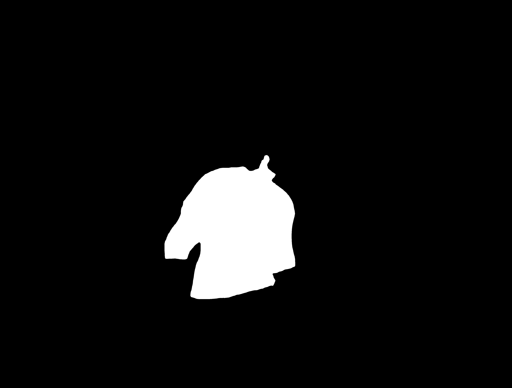
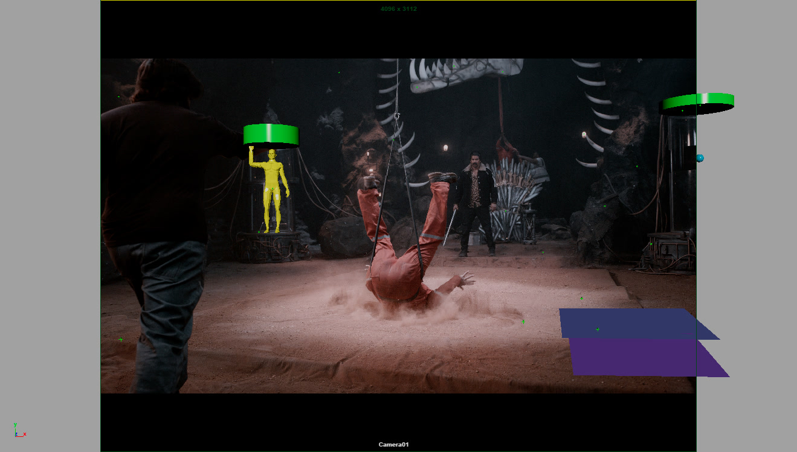

Takshaka Climax: 12-Shot Maya & Matchmove Suite
Direct production output from the feature film climax sequence. Every shot features solved camera telemetry, verified Autodesk Maya scenes (.ma), character/prop stand-ins, USDA screen projections, and Foundry Nuke integration.
 SHOT 002 / 00234
RMS 0.28px
SHOT 002 / 00234
RMS 0.28px
Head Camera Solve & Geometry Line-up
Sub-pixel 3D camera solve adhering to strict camera metadata and survey points. Solved camera handed off to Maya with zero jitter.
 SHOT 010 / 00911
RMS 0.34px
SHOT 010 / 00911
RMS 0.34px
Mid-Range Dolly Solve & Ground Proxy
Solved forward dolly motion with focal length estimation. Aligned ground locator mesh in Maya to eliminate foot-slippage.
 SHOT 011 / 00987
RMS 0.39px
SHOT 011 / 00987
RMS 0.39px
High-Velocity Camera Track & Alignment
Fast-action camera tracking with severe motion blur handling. Filtered rolling shutter artifacts to ensure rock-solid 3D stability.
 SHOT 033 / 02276
122 Masks
SHOT 033 / 02276
122 Masks
Machine-Learning Masking & Tracking
Isolated complex foreground action across 122 frames using machine-learning masks, securing clean background tracking features.
 SHOT 047 / 08981
3 Stand-ins
SHOT 047 / 08981
3 Stand-ins
Multi-Proxy Maya Line-up (Guy01, Cyl, Sph)
Assembled character stand-in proxies (Guy01, Cylinder01, Sphere01) in Maya to ensure accurate shadow interaction and layout scale.
 SHOT 048 / 09175
Wide Lens
SHOT 048 / 09175
Wide Lens
Rapid Pan & Tilt Lens Calibration
Computed lens distortion profile across wide-angle sweep, preventing geometry sliding along frame boundaries.
 SHOT 073 / 11683
RMS 0.29px
SHOT 073 / 11683
RMS 0.29px
Deep Depth Trajectory & Continuity
Long focal length telephoto solve maintaining multi-shot spatial continuity. Handed off to Maya Layout with survey coordinates.
 SHOT 081 / 05939
8 Solves
SHOT 081 / 05939
8 Solves
Complex 8-Pass Iterative Solve Master
8-pass refined tracking solution with custom polySurface2 alignment in Maya. Zero-jitter master camera render (629MB Preview.avi).

SHOT 082 / 06008 53 MasksForeground Character Rotomation & Track
Rotomated foreground actor across 53 frames to isolate clean tracking markers for background 3D camera reconstruction.
 SHOT 084 / 4K UHD
4K Master
SHOT 084 / 4K UHD
4K Master
4K Theatrical Plate Optical Calibration
High-resolution anamorphic 4K plate calibration. Computed lens curvature distortion maps for seamless downstream compositing.
 SHOT 128 / 09225
Guy01 Proxy
SHOT 128 / 09225
Guy01 Proxy
Obstacle Geometry Line-up & Maya Layout
Aligned Guy01 character proxy and locked ground normal in Maya. Screen projection pass delivered through USDA schema.

SHOT 185 / 13355 221MB MasterMaster Climax Multi-Proxy Scene Layout
Heavy-duty 221MB Maya scene with dual ground planes, collision spheres, and proxy rigs built for full CG climax replacement.